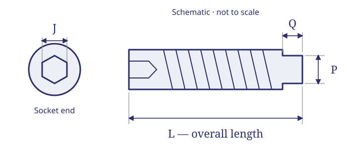

// TECHNICAL RESOURCES
MS51047 half-dog-point set screws.
Find MS51047 thread sizes, screw lengths, nominal socket sizes and point dimensions. Filter selected references and request a quote.
// DIMENSIONS & PART IDENTIFICATION
Half-dog set screw overall length and projection

Schematic only; not to scale. Letter labels are keys for this illustration. Use the applicable part specification for dimensions, tolerances and measurement conventions.
// PART IDENTIFICATION
Identify the point, thread and configuration
MS51047 identifies 300-series stainless steel hex-socket half-dog-point set screws with UNF-3A threads and a passivated finish in the reviewed issue. This table covers 33 historical references from 2-64 through 1/2-20; this reviewed issue marks the family inactive for new design after 29 December 1972.
// REFERENCE SIZES
MS51047 part-number and dimension table
Reference selections for purchasing identification and quotation. Webson confirms availability by inquiry; these rows do not indicate stocked inventory. Configuration shown: plain.
No matching entries. Clear the filters or try a shorter search.
| Part number | Thread | Length per drawing (in) | Length tolerance (in) | Socket AF nominal J (in) | Dog diameter limits P (in) | Dog length limits Q (in) | Configuration | Request pricing |
|---|---|---|---|---|---|---|---|---|
| MS51047-1 | 2-64 | 0.188 | ±0.010 | 0.035 | 0.053–0.057 | 0.020–0.024 | Plain | Quote MS51047-1 → |
| MS51047-2 | 2-64 | 0.250 | ±0.010 | 0.035 | 0.053–0.057 | 0.020–0.024 | Plain | Quote MS51047-2 → |
| MS51047-8 | 4-48 | 0.188 | ±0.010 | 0.050 | 0.070–0.075 | 0.026–0.030 | Plain | Quote MS51047-8 → |
| MS51047-9 | 4-48 | 0.250 | ±0.010 | 0.050 | 0.070–0.075 | 0.026–0.030 | Plain | Quote MS51047-9 → |
| MS51047-15 | 6-40 | 0.188 | ±0.010 | 0.062 | 0.087–0.092 | 0.032–0.038 | Plain | Quote MS51047-15 → |
| MS51047-16 | 6-40 | 0.250 | ±0.010 | 0.062 | 0.087–0.092 | 0.032–0.038 | Plain | Quote MS51047-16 → |
| MS51047-17 | 6-40 | 0.312 | ±0.010 | 0.062 | 0.087–0.092 | 0.032–0.038 | Plain | Quote MS51047-17 → |
| MS51047-18 | 6-40 | 0.375 | ±0.010 | 0.062 | 0.087–0.092 | 0.032–0.038 | Plain | Quote MS51047-18 → |
| MS51047-24 | 8-36 | 0.188 | ±0.010 | 0.078 | 0.103–0.109 | 0.037–0.043 | Plain | Quote MS51047-24 → |
| MS51047-25 | 8-36 | 0.250 | ±0.010 | 0.078 | 0.103–0.109 | 0.037–0.043 | Plain | Quote MS51047-25 → |
| MS51047-26 | 8-36 | 0.312 | ±0.010 | 0.078 | 0.103–0.109 | 0.037–0.043 | Plain | Quote MS51047-26 → |
| MS51047-27 | 8-36 | 0.375 | ±0.010 | 0.078 | 0.103–0.109 | 0.037–0.043 | Plain | Quote MS51047-27 → |
| MS51047-28 | 8-36 | 0.500 | ±0.010 | 0.078 | 0.103–0.109 | 0.037–0.043 | Plain | Quote MS51047-28 → |
| MS51047-34 | 10-32 | 0.188 | ±0.010 | 0.094 | 0.120–0.127 | 0.041–0.049 | Plain | Quote MS51047-34 → |
| MS51047-35 | 10-32 | 0.250 | ±0.010 | 0.094 | 0.120–0.127 | 0.041–0.049 | Plain | Quote MS51047-35 → |
| MS51047-36 | 10-32 | 0.312 | ±0.010 | 0.094 | 0.120–0.127 | 0.041–0.049 | Plain | Quote MS51047-36 → |
| MS51047-37 | 10-32 | 0.375 | ±0.010 | 0.094 | 0.120–0.127 | 0.041–0.049 | Plain | Quote MS51047-37 → |
| MS51047-38 | 10-32 | 0.500 | ±0.010 | 0.094 | 0.120–0.127 | 0.041–0.049 | Plain | Quote MS51047-38 → |
| MS51047-44 | 1/4-28 | 0.250 | ±0.010 | 0.125 | 0.149–0.156 | 0.059–0.067 | Plain | Quote MS51047-44 → |
| MS51047-45 | 1/4-28 | 0.312 | ±0.010 | 0.125 | 0.149–0.156 | 0.059–0.067 | Plain | Quote MS51047-45 → |
| MS51047-46 | 1/4-28 | 0.375 | ±0.010 | 0.125 | 0.149–0.156 | 0.059–0.067 | Plain | Quote MS51047-46 → |
| MS51047-47 | 1/4-28 | 0.500 | ±0.010 | 0.125 | 0.149–0.156 | 0.059–0.067 | Plain | Quote MS51047-47 → |
| MS51047-53 | 5/16-24 | 0.312 | ±0.010 | 0.156 | 0.195–0.203 | 0.074–0.082 | Plain | Quote MS51047-53 → |
| MS51047-54 | 5/16-24 | 0.375 | ±0.010 | 0.156 | 0.195–0.203 | 0.074–0.082 | Plain | Quote MS51047-54 → |
| MS51047-55 | 5/16-24 | 0.500 | ±0.010 | 0.156 | 0.195–0.203 | 0.074–0.082 | Plain | Quote MS51047-55 → |
| MS51047-56 | 5/16-24 | 0.625 | ±0.010 | 0.156 | 0.195–0.203 | 0.074–0.082 | Plain | Quote MS51047-56 → |
| MS51047-62 | 3/8-24 | 0.375 | ±0.010 | 0.188 | 0.241–0.250 | 0.089–0.099 | Plain | Quote MS51047-62 → |
| MS51047-63 | 3/8-24 | 0.500 | ±0.010 | 0.188 | 0.241–0.250 | 0.089–0.099 | Plain | Quote MS51047-63 → |
| MS51047-64 | 3/8-24 | 0.625 | ±0.010 | 0.188 | 0.241–0.250 | 0.089–0.099 | Plain | Quote MS51047-64 → |
| MS51047-65 | 3/8-24 | 0.750 | ±0.020 | 0.188 | 0.241–0.250 | 0.089–0.099 | Plain | Quote MS51047-65 → |
| MS51047-71 | 1/2-20 | 0.500 | ±0.010 | 0.250 | 0.334–0.344 | 0.120–0.130 | Plain | Quote MS51047-71 → |
| MS51047-72 | 1/2-20 | 0.625 | ±0.010 | 0.250 | 0.334–0.344 | 0.120–0.130 | Plain | Quote MS51047-72 → |
| MS51047-73 | 1/2-20 | 0.750 | ±0.020 | 0.250 | 0.334–0.344 | 0.120–0.130 | Plain | Quote MS51047-73 → |
All dimensions are in inches. Length preserves printed decimal values such as 0.188 and 0.312; the adjacent ± value is the drawing’s length tolerance. Point values are minimum–maximum limits. J is the drawing’s nominal socket width across flats, not a measured acceptance range.
// MEASUREMENT GUIDE
Measure length and point geometry
L is overall screw length from the socket end to the end of the projecting dog. Q is only the dog projection, and P is its diameter. The dog is included in L; do not add Q to the listed length or treat L as the threaded engagement length.
The reduced cylindrical point must match the receiving feature specified by the assembly drawing. A thread and length match does not establish that a cup or flat point can replace a half-dog point.
// ORDERING DETAILS
Read the dash number and locking requirement
MS51047-47 identifies a 1/4-28 half-dog screw with 0.500-inch overall length. Its dog projection Q is 0.059–0.067 inch, included in that overall length.
The reviewed MS51047B issue marks this family inactive for new design after 29 December 1972. These rows support identification of existing drawing callouts. They are not a recommendation for new designs or an automatic conversion to another standard.
// FAMILY COMPARISON
Compare related set-screw families
No matching entries. Clear the filters or try a shorter search.
| Series | Point | Thread series | Material and finish | Table configuration |
|---|---|---|---|---|
| MS51021 | Cup | UNC-3A | Passivated stainless steel | Selected plain sizes |
| MS51023 | Cup | UNF-3A | Passivated 300-series stainless steel | Plain selections |
| MS51031 | Flat | UNF-3A | Passivated 300-series stainless steel | Self-locking selections |
| MS51047 | Half-dog | UNF-3A | Passivated 300-series stainless steel | Plain selections |
| MS51963 | Cup | UNC-3A | Cadmium plated alloy steel | Plain selections |
Compare the point, thread, material, finish and locking configuration together. These family comparisons do not establish an approved substitution.
// DRAWING REQUIREMENTS
Match the governing drawing issue
Dimensions summarize MS51047B, sheet 1, 29 December 1972. These are selected historical references for purchasing identification. The issue required by your drawing controls full geometry, thread requirements, material, finish, locking provisions and inspection. No automatic successor or part-number substitution is implied.
// BUYER CHECKLIST
Prepare the requirement for quotation
- Complete designation, including all material, finish and locking suffixes.
- Quantity, required delivery date and controlling drawing or specification issue.
- Required certificates, source restrictions and lot traceability.
// SOURCE WITH WEBSON
Have a part number or bill of material?
Send the complete designation, quantity, required delivery date and documentation requirements. Webson will review your requirement for quotation.